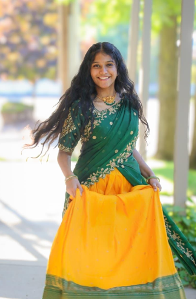

My photoshoot is teaching me patience, creativity, and how small details can tell a bigger story.
Concept Photoshoot Series – themed shoots (like confidence, culture, or storytelling) that showcase different sides of me.
Portfolio Development – building a strong collection of versatile looks (casual, traditional, editorial, high-fashion) to show your range.
Brand Collaboration Project – working with small businesses or designers to model their outfits, creating mutual growth.
My First Photoshoot
My very first photoshoot look, captured in a traditional half saree that beautifully blends grace, culture, and elegance. This moment reflects both my roots and the joy of experiencing the art of modeling for the first time.
Onam Special
Onam is more than a festival, it’s a celebration of heritage, colors, and happiness. This photoshoot captures that spirit, with traditional attire bringing out the grace of the occasion and the festive mood shining through every frame

- Skills I learnt: Posing, Communication
- Skills in process: Expressing emotions, Styling